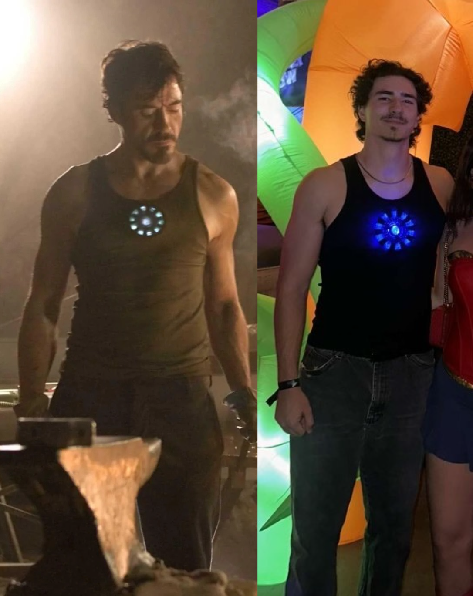

3D Printed Arc Reactor
A custom-designed and fabricated Halloween costume component showcasing the power of additive manufacturing

Finished arc reactor prop

SolidWorks assembly CAD model I created of the arc reactor

The soldering job on the LEDs... not pretty but it did the trick

How did I do?
Overview
Feeling particularly determined one Halloween, I wanted to make an Iron Man related costume but I didn't have enough time to prototype and develop a whole suit. Instead, I opted for a more subtle interpretation and decided to be Cave Tony Stark for Halloween. This still required an arc reactor prop to wear, and making that was much more doable. It was designed in SolidWorks and 3D printed with holes for LEDs. The LEDs were soldered together in parallel and to a 5V battery to allow it to be transportable. I was then able to duct tape the reactor to my chest, for a lack of a better solution in the time I had. Under the tank top, I think it looked pretty convincing. I was able to make the whole prop in just two days!
Process
- Created a CAD model assembly of the arc reactor
- 3D printed the model
- Soldered over 10 LEDs together in parallel
- Sealed exposed wire with electrical tape
Tools
Skills
Outcomes and Results
This project was a prime example of the power of 3D printing. Prior to the existence of this technology, it would not have been possible to make an item of this quality in a pinch. It gave me a newfound appreciation for today's world that if I need to whip up a custom Halloween costume in a rush, I can do it at will. The lights stayed functional up into a bit later in the night, where I believe one of the soldering connections came loose, turning off the reactor lights completely. If I had more time, I would have made the soldering connections stronger and better concealed so this wouldn't happen. Overall, I was very happy with the result, and it was a fun conversation topic.
Reflection
Reflecting on this project, it was an incredible 2 day journey of exercising creativity and readily available engineering processes. 3D printing in general has been such a huge part of my engineering career. Each print presents unique challenges, from optimizing designs for printability to fine-tuning printer settings for the best results. This process has not only improved my CAD skills for the better but also has been greatly helpful in making my ideas come to life. Moving forward, I'm excited to explore more complex designs, experiment with fancier materials, and integrate more sophisticated electronics into my prints for interactive projects.